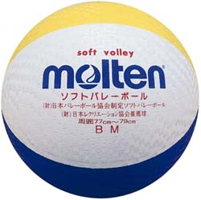
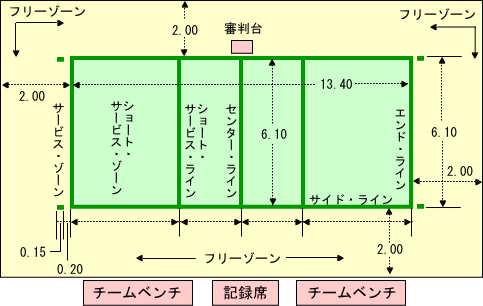
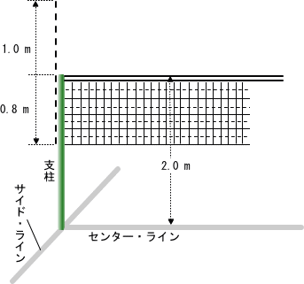
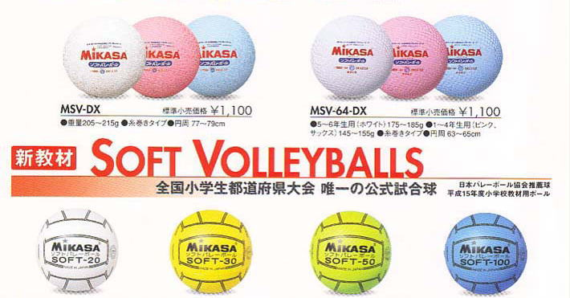

ソフトバレーボールは、1チーム4人で、軟らかいボールを使うバレーボールです。ルールは、バレーボールとほとんど同じです。

競技に使うボールです。
重さ 210g ± 10g
円周 78cm ± 1cm
ゴム製です。
顔に当たっても痛くないです。
ちなみに、顔に当たると、もれなく笑いが取れます。


ソフトバレーボール競技の特長
（ソフトバレーボールルールブック より抜粋）
ソフトバレーボールは、1チーム4人の競技者が親しみやすい軟らかいボールを床に落としたり、反則することなくネットをはさんで攻防を繰り広げ、そのラリーに勝ったチームが得点する方法で勝敗を決定するというバレーボールと同じスポーツである。また、生涯を通じてバレーボールを楽しむことができることを願って考案されたもので、次のような特長を持っている。
- ボールをソフト化することによって、バレーボールの最も重要な基礎技術である「パス」が、安全で、しかも容易にでき、誰でも、いつでも、どこでもできるというバレーボールの特長が、一層明確になるように工夫されている。
- 既存の施設、用具（バドミントンコート・支柱・ネット）の活用で、手軽に競技することができる。
- 「発展性に乏しいため、とっつきやすいがすぐ飽きてしまい余り普及しない。」という軽スポーツの持つ一般的な短所を改善し、男女別、年齢、体力、経験、技術等のレベルに応じて、単純な基礎技術による初歩的なゲームから、複雑な応用技術や各種の作戦、戦術を駆使した高度なゲームまで、多様な楽しみ方ができて奥行きが深い。
- ゲーム中、すべての競技者に対して等しくプレーするチャンスが用意されている。
- 正規の６、９人制の長所を活かしているため、バレーボールの素晴らしさに触れ、リード・アップ・ゲームとして活用できるとともに、ソフトバレーボールそのものを独立した競技として楽しむことができる。

戻る